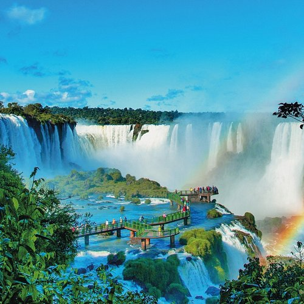

Top 10 lugares que eu gostaria e ainda vou visitar no Brasil e no mundo!
Lista ordenada de lugares que vou vistar
-
Local: Taj Mahal
Motivo: O Taj Mahal é um mausoléu icônico localizado em Agra, Índia, famoso por sua arquitetura deslumbrante e história de amor. Foi construído pelo imperador Mughal Shah Jahan em memória de sua esposa favorita, Mumtaz Mahal, e é considerado uma das Sete Maravilhas do Mundo Moderno
Foto:
-
Local:Egito
Motivo: As Pirâmides de Gizé são um destino turístico icônico e oferecem diversas razões para serem visitadas, incluindo a maravilha arquitetônica, a importância histórica e a oportunidade de explorar um dos maiores mistérios da antiguidade. Elas representam um marco da engenharia e arquitetura antiga, com construções que resistiram ao tempo e continuam a intrigar e inspirar.
Foto:
-
Local:Machu Pichu
Motivo: Machu Picchu oferece uma combinação única de beleza cênica, significado histórico e importância cultural que a torna um destino turístico imperdível. A cidade inca, situada no alto dos Andes peruanos, atrai visitantes de todo o mundo por sua arquitetura impressionante, paisagens deslumbrantes e atmosfera mística.
Foto:

-
Local: Foz do Igauçu
Motivo: Foz do Iguaçu é um destino turístico popular devido às suas impressionantes Cataratas do Iguaçu, um espetáculo natural com mais de 275 quedas d'água. Além disso, a cidade oferece outras atrações como o Parque das Aves, o Parque Nacional do Iguaçu com sua rica biodiversidade e a possibilidade de visitar o lado argentino das cataratas.
Foto:

-
Local: São Thomé das Letras - Minas Gerais
Motivo: Além das incríveis belezas naturais a região é conhecida por lendas e mistérios, sendo considerada um ponto energético da Terra, com histórias de aparições, portais dimensionais e fenômenos inexplicáveis.
Foto:
-
Local: Amazonia
Motivo: A Amazônia é um bioma de importância global devido à sua biodiversidade, regulação do clima e serviços ecossistêmicos. Sua vastidão e riqueza natural a tornam um alvo de exploração econômica, mas também um local de grande valor para a manutenção do equilíbrio ambiental.
Foto:
-
Local: China
Motivo: A China oferece inúmeras razões para visita, combinando história antiga, cultura vibrante e paisagens espetaculares. Desde a icônica Grande Muralha e os Guerreiros de Terracota até as paisagens cársticas de Guilin e as metrópoles modernas como Xangai.
Foto:
-
Local: Japão
Motivo: Alguns dos principais motivos para visitar o Japão incluem sua rica cultura, paisagens deslumbrantes, cidades vibrantes, culinária deliciosa e sistema de transporte eficiente.
Foto:
-
Local: Italia
Motivo: A Itália é um destino turístico popular por uma combinação de fatores, incluindo sua rica história e cultura, culinária deliciosa, paisagens deslumbrantes e clima agradável. Além disso, a Itália é um país com forte influência na arte, arquitetura e música ocidental, tornando-a um local de grande interesse para viajantes de todo o mundo.
Foto:
-
Local: Noruega
Motivo: A Noruega é um destino turístico popular por suas paisagens deslumbrantes, incluindo fiordes, montanhas e a Aurora Boreal. Além disso, a cultura viking, as cidades históricas e as atividades ao ar livre, como esportes de inverno, atraem muitos visitantes.
Foto: